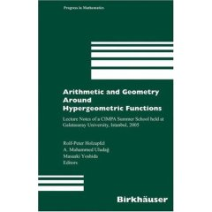

A. Muhammed Uludağ

Ciragan Cad. No.36, Besiktas, Istanbul, 34357 Turkey
Telephone:
+ 90 212 227 44 80 - 462
g-mail:
muhammed.uludag
Vita
Publications --see below
Research interests
Motto: Knowledge without research eventually stagnates
I am interested in everything connected to the modular group PSL(2,Z) (which includes mathematics and more). These days I am working on an exotic involution of the real line and an associated dynamical system which is non-topologically conjugate (by jimm) to the Gauss map. I also work on a space on which the general linear group over Q acts, with the hope that I can prove via this action my conjectural presentation for the latter group. All these are related to dessins, binary quadratic forms, dynamical systems, transfer operators, Thompson's groups and to some aspects of the Teichmüller theory. Over the time I worked on algebraic geometry, orbifolds and all that is hyper: hypergeometry, complex hyperbolic geometry, hyperplane arrangements, topology of hypersurface complements. I was initiated to research in complex analysis.
Here is a modular group toy (developed by Ayberk Zeytin, Hakan Ayral and Celal Cem Sarıoğlu) Enjoy! (needs flash) The cells in the "slit" disc represents the elements of the modular group; in fact, what you see is nothing but a very fat Farey tree. Fat branches meet along the slits. Clicking on a cell brings it to the center and this way you can travel to infinity. Venture beyond the numerical limit and you will be rewarded! Continued fractions and congruence subgroups animations will appear soon! Prize question. Find explicitly the conformal isomorphism between the Poincaré disc and the (properly defined) slit disc.
Hypergeometric Galois Actions:
Scientific Events
Journees
Arithmetiques 2019 will be held in Istanbul (inshallah)
-- before JA2023 which will be held in Dublin !!
(Invited lecturer) (Nesin Mathematics Village, July 2014)
2nd ANR
Summer School on Finsler Geometry
(SAMOS, September 2014)
CIMPA/TUBITAK/GSU SUMMER SCHOOL
Algebraic
Geometry and Number Theory (GSU, June 2014)
(Invited speaker) IRMA/STRASBOURG, May 9 - 17, 2014
(GSU, 10-17 April 2014)
(GSU, 19-23 March 2014)
Past and Current Research Activities at Galatasaray University
EDUCATION

Institut
Joseph
Fourier,
Grenoble, France. 1997--2000, Ph. D. Mathematics

Institut
Joseph
Fourier,
Grenoble, France. 1996--1997, DEA Mathematics
Bilkent
University,
Ankara, Turkey, 1994--1996, M.S. Mathematics

Bosphorus
University,
Istanbul, Turkey, 1989--1994, B.S. Mathematics

Ankara Fen
Lisesi,
Ankara, Turkey, 1986--1989, High School Diploma
Teaching
Motto: To inspire is more important then to teach!
Probability, Complex Analysis, Discrete mathematics, Automata and theory of languages, Introduction to Cryptography, Complexity and theory of languages, Numerical Analysis, Introduction to Mathematical Logic and Set Theory, Linear Algebra, Calculus, Real Analysis, Complex Analysis, Functional Analysis, Riemann Surfaces, Abstract Algebra, and counting...
Mathématiques à GSU
Pour acceder aux documents pédagogiques sur l'enseignement de
mathématiques à GSU, consulter kikencere
The Çark Groupoid and Thompson's Groups (Under preparation, with Ayberk Zeytin) (2013)
Actions of the Modular
Group, (with an appendix by
Hakan Ayral)
to appear in: Handbook of Group Actions, Athanase Papadopoulos, Lizhen
Ji and S.-T. Yau (editors) International Press, 2013/2014.
Modüler Grup (Under
preparation, with Irem Portakal)
(A book project in Turkish on the modular group, estimated to appear in
2014)
Binary Quadratic
Froms as Dessins (2013, submitted for publication)
(with A. Zeytin and M. Durmuş)
On finite branched
uniformizations of the projective plane (with C.C. Sarıoğlu)
International Journal of Mathematics (2013)
Quadrangulations of sphere, ball
quotients and Belyi maps (with A. Zeytin)
Mathematische Nachrichten (2014)
(Co-editor) Aritmetic
and
Geometry
Around Galois Theory
Lecture Notes of a GTEM/TUBITAK Summer School,
Progress in Math.
Birkhauser
P. Debes, M . Emsalem, M. Romagny, A. M. Uludag (Eds), 2012.
(Co-editor) Arrangements,
Local
Systems
and Singularities
Lecture Notes of a Summer School, Progress in Math. 283, Birkhauser
F. ElZein, A. Suciu, M.Tosun, A.M. Uludag, S. Yuzvinsky (Eds) 2010.

KİTAP'tan Deliller (translator)
Proofs
From
The
Book by Martin Aigner and Gunter M. Ziegler (Appeared in
March 2009: Bilgi University
Publications )
Turkish Academy of Sciences award in 2010
Smooth finite abelian
uniformizations of projective spaces and Calabi-Yau orbifolds,
Manuscripta Mathematica, 124 (2007) No.1 31-44
OSS Sinavi uzerine -- E. D. Hirsh on bubble tests A critique (in Turkish) of the university entrance exam in Turkey (2008) Published: here
Orbifolds and their uniformization, lecture note, appeared in the following book.

(Co-editor) Arithmetic and Geometry Around Hypergeometric Functions Lecture Notes of a CIMPA Summer School held at Galatasaray University, Istanbul, 2005 Progress in Math., Vol. 260 Holzapfel, Rolf-Peter; Uludag, Muhammed; Yoshida, Masaaki (Eds).
Galois Coverings of the plane by K3 surfaces, Kyushu J. Math. Vol. 59 (2005) , No. 2 393-419
Covering relations between ball-quotient orbifolds, Math. Annalen 308, No.3 (2004) 503-523.
On Branched Galois Coverings of P^n by products of discs, International J. Math. 4 10 (2003) 1025-1037.
Fundamental groups of some quadric-line arrangements, (with Amram, M. and Teicher, M.) Topology App. 130, 2 (2003) 159-173
More Zariski pairs and finite fundamental groups of plane curve complements, Manuscripta Math. 106 3 (2001) 271-277.
Existence of Green function and bounded harmonic functions on Galois covers of Riemannian Manifolds, Osaka J. Math. 38, no 2 (2001).
Ph. D. Thesis Fundamental
groups of a family of rational cuspidal plane curves
Institut Fourier, Grenoble (2000)
On possible deterioration of
smoothness under the operation of convolution,
Journal of Mathematical Analysis and Applications, 227, (1998)
335-358.
On possible deterioration of smoothness under the operation of convolution, C.R. Acad. Sci. Paris, t.322, serie I, (1996) 173-178.
Prof. Dr. Cengiz Uluçay'ın Fonksiyonlar Teorisi ve Riemann Yüzeyleri kitabı
Ahmet Nazmi ve Hilmi'nin Lise III'ler için HENDESE kitabı (1930)
BOOK XI
As to living in the best way, this power is in the soul, if it be
indifferent to things which are indifferent. And it will be
indifferent, if it looks on each of these things separately and all
together, and if it remembers that not one of them produces in us an
opinion about itself, nor comes to us; but these things remain
immovable, and it is we ourselves who produce the judgements about
them, and, as we may say, write them in ourselves, it being in our
power not to write them, and it being in our power, if perchance these
judgements have imperceptibly got admission to our minds, to wipe them
out; and if we remember also that such attention will only be for a
short time, and then life will be at an end. Besides, what trouble is
there at all in doing this? For if these things are according to
nature, rejoice in them, and they will be easy to thee: but if contrary
to nature, seek what is conformable to thy own nature, and strive
towards this, even if it bring no reputation; for every man is allowed
to seek his own good.
Consider whence each thing is come, and of what it consists, and into
what it changes, and what kind of a thing it will be when it has
changed, and that it will sustain no harm.
If any have offended against thee, consider first: What is my relation
to men, and that we are made for one another; and in another respect, I
was made to be set over them, as a ram over the flock or a bull over
the herd. But examine the matter from first principles, from this: If
all things are not mere atoms, it is nature which orders all things: if
this is so, the inferior things exist for the sake of the superior, and
these for the sake of one another.
Second, consider what kind of men they are at table, in bed, and so
forth: and particularly, under what compulsions in respect of opinions
they are; and as to their acts, consider with what pride they do what
they do.
Third, that if men do rightly what they do, we ought not to be
displeased; but if they do not right, it is plain that they do so
involuntarily and in ignorance. For as every soul is unwillingly
deprived of the truth, so also is it unwillingly deprived of the power
of behaving to each man according to his deserts. Accordingly men are
pained when they are called unjust, ungrateful, and greedy, and in a
word wrong-doers to their neighbours.
Fourth, consider that thou also doest many things wrong, and that thou
art a man like others; and even if thou dost abstain from certain
faults, still thou hast the disposition to commit them, though either
through cowardice, or concern about reputation, or some such mean
motive, thou dost abstain from such faults.
Fifth, consider that thou dost not even understand whether men are
doing wrong or not, for many things are done with a certain reference
to circumstances. And in short, a man must learn a great deal to enable
him to pass a correct judgement on another man's acts.
Sixth, consider when thou art much vexed or grieved, that man's life is
only a moment, and after a short time we are all laid out dead.
Seventh, that it is not men's acts which disturb us, for those acts
have their foundation in men's ruling principles, but it is our own
opinions which disturb us. Take away these opinions then, and resolve
to dismiss thy judgement about an act as if it were something grievous,
and thy anger is gone. How then shall I take away these opinions? By
reflecting that no wrongful act of another brings shame on thee: for
unless that which is shameful is alone bad, thou also must of necessity
do many things wrong, and become a robber and everything else.
Eighth, consider how much more pain is brought on us by the anger and
vexation caused by such acts than by the acts themselves, at which we
are angry and vexed.
Ninth, consider that a good disposition is invincible, if it be
genuine, and not an affected smile and acting a part. For what will the
most violent man do to thee, if thou continuest to be of a kind
disposition towards him, and if, as opportunity offers, thou gently
admonishest him and calmly correctest his errors at the very time when
he is trying to do thee harm, saying, Not so, my child: we are
constituted by nature for something else: I shall certainly not be
injured, but thou art injuring thyself, my child.- And show him with
gentle tact and by general principles that this is so, and that even
bees do not do as he does, nor any animals which are formed by nature
to be gregarious. And thou must do this neither with any double meaning
nor in the way of reproach, but affectionately and without any rancour
in thy soul; and not as if thou wert lecturing him, nor yet that any
bystander may admire, but either when he is alone, and if others are
present...
Remember these nine rules, as if thou hadst received them as a gift
from the Muses, and begin at last to be a man while thou livest. But
thou must equally avoid flattering men and being veied at them, for
both are unsocial and lead to harm. And let this truth be present to
thee in the excitement of anger, that to be moved by passion is not
manly, but that mildness and gentleness, as they are more agreeable to
human nature, so also are they more manly; and he who possesses these
qualities possesses strength, nerves and courage, and not the man who
is subject to fits of passion and discontent. For in the same degree in
which a man's mind is nearer to freedom from all passion, in the same
degree also is it nearer to strength: and as the sense of pain is a
characteristic of weakness, so also is anger. For he who yields to pain
and he who yields to anger, both are wounded and both submit.
But if thou wilt, receive also a tenth present from the leader of the
Muses (Apollo), and it is this- that to expect bad men not to do wrong
is madness, for he who expects this desires an impossibility. But to
allow men to behave so to others, and to expect them not to do thee any
wrong, is irrational and tyrannical. (The Meditations
By Marcus Aurelius)
Cosmic Unification in the Presence
of the Eye-witnessing through the
Assembly of the Human Tree and the Four Spiritual Birds
"....
From my impossibility to my validity, and from my validity to my
deficiency.
I am no one in existence but myself, so-
Whom do I treat as foe and whom do I treat as friend?
Whom do I call to aid my heart, pierced by a penetrating arrow,
When the one who shot the arrow is my eyelid, striking my heart without
an archer?
Why defend my station? It matters little to me, what do I care?
For I am in love with none other than myself, and my very separation is
my union.
Do not blame me for my passion. I am inconsolable over Him who has fled
me. -
- In this epistle I never cease addressing myself and returning to
myself from my very self.
...
I am my beloved and my lover; I am my knight and my maiden.
....
I praise God who has "fashioned" me and "balanced" me, and made me
enter upon "the most beautiful of constitutions." For He made me know
myself through myself and caused me to appear to myself, so that I
became enamored of only myself. Between my distance and my proximity I
have become mad with love for myself, and I address myself alone.
Were I to see myself when I in my Essence, came to myself, secretly or
openly,
And said, "Greetings" and answered, "At your service,"
And if my turning were from me to me, my very "Here I am!" would
annihilate me,
My enemies and my trusty friends, my threat of punishment and my
surplus grace,
My paradise of delights and my promised recompense, my witnessing and
my testimony.
What wonderful favor would be mine through myself!
Oh I! Return me by me to me until I see my stability.
He returned me by me to me from me, and only my qualities subsisted in
me.
...
When the signs of witnessing were lifted from me and the suffering of
spiritual combat was removed, and harmony and succor began to flow
through me, I mounted the Burâq of my spiritual aspiration and departed
from the cycle of this grief. I fell into the sea of matter, and beheld
the next world and the present one.
Then I shouted: "Oh alas!" and "Alas, my burning heart. I fled from the universe and here I am in it. Where is what I seek?"
I heard a voice coming from me-but neither inside me nor
outside me-say: "Why do you demand a high station when you are on the
road?
...
I answered: "Oh you who obstruct me, your words have wounded me. Do you
not know that you speak from your own station? You are in the presence
of the essential being, divested of time and place, while I am in this
dark sea, in this thick gloom and this fearful calamity, in this mine
of lies and doubt, this place of faults and vices. Does not the one who
is prisoner of quantity and quality and precepts of wisdom cry out:
Woe!? If you extract me from the crashing waves and deliver me from the
horror of this gloomy night I will never more pronounce the adverb or
the preposition of place."
...
Through his irresistible power he attracted me to himself and said to
me: "You are vanquished, so seek help!"
...
When he attracted me to himself I saw myself in another form than my
previous one and I established myself there, firmly and steadily.
I said: "Oh I!"
He said: "I, welcome!"
I said: "No welcome, no greetings, no make yourself at ease!"
He said: "Oh eye-balm, what is the doubt that assails you? Oh prisoner
of creation, what is afflicting you?"
I answered: "You do not cease from veiling me from myself. Unveil me to
myself so that I can know myself!"
...
When I heard that there was still a trace of createdness before me, I
feared that it would cut me off from my cognizance. So I rose from that
gloomy darkness, leaving the Burâq of my aspiration in it. I was
transported to the thrones of subtle grace and the cushions of the
celestial couches, until I reached the station of rejoicing where I set
myself to oscillate like a hanging lamp. I said: "What do I have to do
with the state of audition?"
Someone said: "It is the beauty of the rhythm that has set you in
motion."
I said: "I didn't feel it."
Someone said to me: "Be careful! For you are in yourself and not in
him!"
I said: "Reality is beyond the rhythms of song. What it demands is
extinction within extinction."
No sooner had I pronounced these words than a veil was lowered between
my essence and his essence and a condition was set between him and me.
...
Then the Universal Tree of the garden, described as the Likeness, was
unveiled to me
I observed a tree "whose root is firm and whose branches are in the
heavens." Its fruit is in the hand of the Deity, established on the
Throne. Among its branches sat the Crow and the strange Anqâ, and in
the shelter of its boughs perched the Eagle and the Ring Dove. I
greeted the Tree and it answered, greeting me even more finely.
It said: "Listen, O wayfarer, O king."
Discourse of the Universal Tree, described as the Likeness
"I am the universal tree of synthesis and likeness. My roots are deep,
my branches are lofty.
..
The spirits blow on me from all directions. They disarrange the order
of my branches. In striking against one another they make one hear such
melodious sounds that they enrapture the supreme intellects in the
utmost heights, and set them circling in accordance with what is
inscribed in their scroll. I am the music of wisdom that removes care
through the beauty of its melodious rhythm."
...
Discourse of the Royal Eagle
"I was still nonexistent as an entity in one of the degrees of creation
when the divine solicitude came and made my existence the Beginning.
Having manifested Himself to Himself, my existence was prolonged in
self-contemplation."
...
Oh, Sakhr ibn Sinân, I have explained to you some of the stations of
the sources of the creatures: the universal man, the first intellect,
the unique soul, prime matter, and universal body. Investigate them
like an intelligent man who seeks the salvation of his soul.
Peace be upon its author and upon us!
(al-Ittihad al-kawni fi hadrat al-ishhad al-ayni bi-madhur al-shajara
al-insaniyya wa-l-tuyur al-arbaa al-ruhaniyya)
(Epistle
on
Cosmic
Unification - Muhyiddin Ibn 'Arabi translated by Angela
Jaffray) top
Previous Favorite Quote:
"My Friend!
What I have so often told you, I say it once more, or rather I cry it
to you: Either-Or! On me these words have always made a strong
impression. - I think of an early youth,where, without really
understanding what it is to choose in life, with childish confidence
listened to the speech of my seniors, and the moment of choice became
to me solemn and revered, even though in choosing I only followed
somebody else's directions. I think of the moments in later life, where
I was in the dividing path, where my soul was matured in the hour of
decision. I think of the many, less important, but to me not
uninteresting cases in life, where choosing was the issue; for even if
there is only one context where this word has its absolute meaning,
namely every time on one hand Truth, Justice and Holiness, on the other
hand Lust and Inclinations, obscure Passions and Perdition,show up,
then it is always important also in things, where it is in itself
innocent, which one chooses, to choose right, to test oneself, so that
one shall not painfully retreat to the point of departure, and thank
God if one has not more to reproach oneself than having wasted one's
time.
The choice itself is decisive for the contents of the personality. - If
you imagine a helmsman of a ship at the moment when it has to cross
over, then he may say, I can do either this or that; but if he is not a
mediocre helmsman, then he will also be aware that, during all this,
the ship is going at its usual speed , and that thus there is only a
moment where it does not count whether he does this or that. So it is
with Man, if he forgets to take this speed into account, then at last a
moment comes, where there is no more talk of an Either-Or, not because
he has chosen, but because he has left it out, which can also be
expressed in this way, because others have chosen for him, because he
has lost himself. Now if you will the understand me right, then I can
willingly say that in choosing it is not so much the matter of choosing
the right thing, as of the energy, the seriousness and the pathos, by
which one chooses. In this the personality proclaims itself in its
inner infinity, and thereby again the personality is consolidated. So
even if a person chose the wrong thing, then he will still, even
because of the energy by which he chose, find that he chose the wrong
thing. Since indeed the choice is undertaken with the whole intensity
of the personality, his being is purified, and he himself brought into
an immediate relation to the eternal power that ever present pervades
the whole existence. So for freedom I fight, for the future time, for
Either-Or." (Soren Kierkegaard) top
Previous Favorite Quote:
"How does a normally talented research scientist come to concern himself with the theory of knowledge? Is there not more valuable work to be done in his field? I hear this from many of my professional colleagues; or rather, I sense in the case of many more of them that this is what they feel. I cannot share this opinion. When I think of the ablest students whom I have encountered in teaching - i.e., those who have distinguished themselves by their independence and judgement and not only mere agility - I find that they have a lively concern for the theory of knowledge. They like to start discussions concerning the aims and methods of the sciences, and showed unequivocally by the obstinacy with which they defend their views that this subject seemed important to them. This is not really astonishing. For when I turn to science not for some superficial reason such as money-making or ambition, and also not (or at least exclusively) for the pleasure of the sport, the delights of brain-athletics, then the following questions must burningly interest me as a disciple of science: What goal will be reached by the science to which I am dedicating myself? To what extent are its general results `true'? What is essential and what is based only on the accidents of development?... Concepts which have proved useful for ordering things easily assume so great an authority over us, that we forget their terrestrial origin and accept them as unalterable facts. They then become labelled as `conceptual necessities', `a priori situations', etc. The road of scientific progress is frequently blocked for long periods by such errors. It is therefore not just an idle game to exercise our ability to analyse familiar concepts, and to demonstrate the conditions on which their justification and usefulness depend, and the way in which these developed, little by little..." (Albert Einstein) top